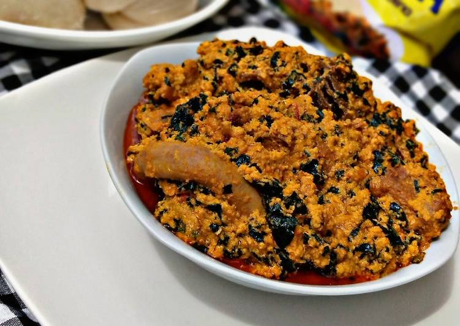

Egusi Soup

A dish of egusi soup with assorted meats
Made from powdered dried melons, vegetables, palm oil, seasonings and assorted meats. It is a
common stapple in amny parts of West Africa and among other Afro-centric communities around
the world
Best served with mousels of eba, starch or pounded yam
Ingredients
- Dried Melon seeds
- Vegetables
- Palm Oil
- Seasonings
- Assorted Meats
- Locust Beans
Recipe Instructions
- Add some palm oil to a dry pot
- Add the locust beans
- Add a mixture of pepper as desired
- Mix the egusi powder into a paste and add it to the pot
- Cook for a few minutes
- Add seasonings and salt to taste
- Add the meats, whcih should have been pre-cooked
- Add the chopped and washed vegetables
- Allow to simmer for a few minutes and serve hot
Return to Homepage